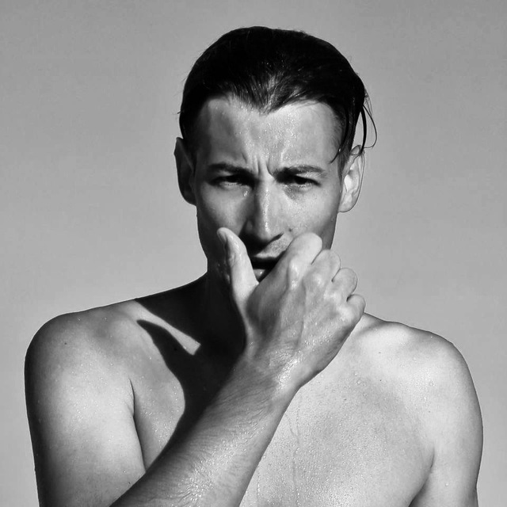

Николаев Игорь
Мужчина, 29 лет,
родился 26 июля 1994
Контакты
+7 (915) 301-69-80
nikolaev.tamarisk@gmail.com
Берлин Германия
|
Java Developer
Специализации:
Программист, разработчик
Занятость: полная занятость
График работы: полный день
Опыт работы
Март 2017 — Февраль 2018
1 год
ООО Юником
Москва, une-com.ru
Информационные технологии
Веб-разработчик
Фронтенд-разработка: создание пользовательского интерфейса веб-приложений с помощью языков
программирования, таких как HTML, CSS и JavaScript. Фронтенд-разработчики отвечают за то, чтобы
веб-сайты были привлекательными, удобными в использовании и хорошо работали на различных
устройствах и браузерах
Бэкенд-разработка: написание серверной части веб-приложений и обеспечение их корректной работы.
Бэкенд-разработчики работают с базами данных, серверными языками программирования (например,
PHP, Python, Ruby, Java) и другими инструментами, чтобы обрабатывать запросы пользователей,
хранить и извлекать данные и выполнять другие функции, необходимые для функционирования
веб-приложений.
Дизайн: создание визуального дизайна веб-сайтов, включая выбор цветовой схемы, шрифтов,
компоновку элементов и создание графических элементов, таких как логотипы и изображения.
Тестирование и отладка: проверка работоспособности и безопасности веб-приложений, исправление
ошибок и устранение неполадок.
Обновление и поддержка: регулярное обновление и поддержка веб-приложений, внесение изменений и
добавление новых функций по мере необходимости.
|